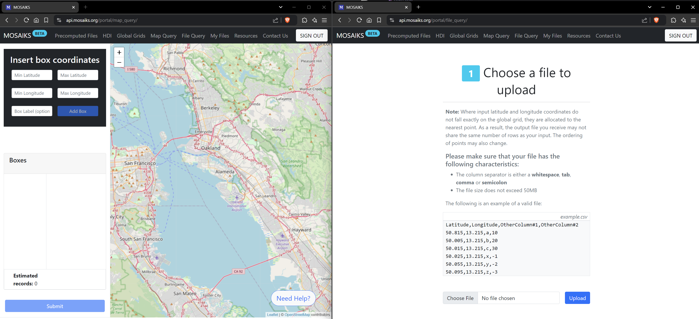
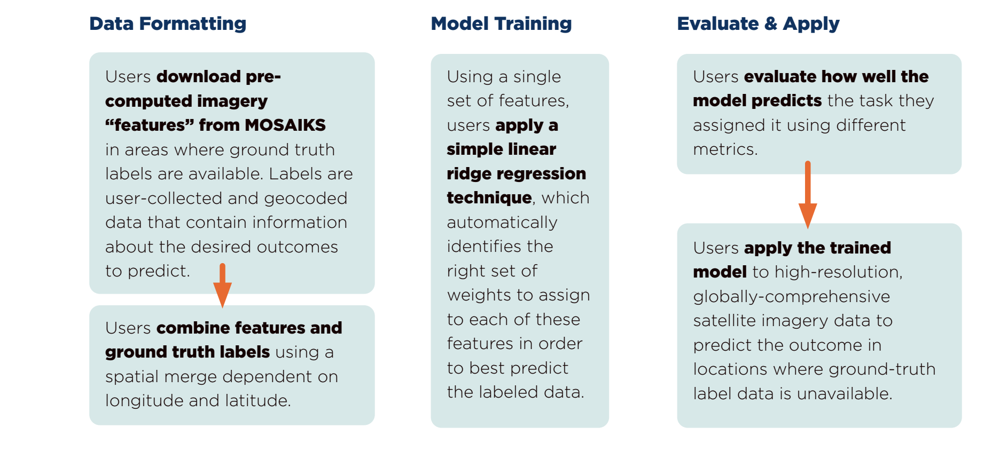

3 Access MOSAIKS
This chapter is in early draft form and may be incomplete.
3.1 API Overview
We have worked to develop multiple ways to access MOSAIKS features:
Global Administrative Units (Planet imagery) You can download features aggregated to country, province, or municipality (ADM0/ADM1/ADM2 boundaries), as described in Sherman et al. (2023). These features are based on Planet imagery. These files are relatively small in size and can be used at these resolutions or to downscale administrative data. To download them, register at api.mosaiks.org and access them via the “Precomputed Files” tab.
USA grid from Rolf et al (Google basemap imagery) You can download features for a set of locations across the United States, as described in Rolf et al. (Nature Communications, 2021). These features are based on imagery from the Google Earth base map. You can download the features from the Code Ocean Capsule associated with that manuscript (the capsule will also allow you to replicate the analysis of that paper on a remote machine). The Github repository for that analysis is here.
Global 0.01 x 0.01 degree grid (Planet imagery) You can download features for a complete and dense grid of global land areas via our API. These features are based on on quarterly mosaics from Planet’s Surface Reflectance Basemaps produce from 2019 Q3. Because the complete data set is large (multiple TB), you will need to request custom subsamples of the imagery. To download them, register at api.mosaiks.org and access them via the “Map Query” tool or by uploading a list of locations via the “File Query” tool.
Recompute MOSAIKS features (Landsat & Sentinel imagery) You can recompute MOSAIKS features yourself using Microsoft’s Planetary Computer (Github repo which currently supports Gaussian random convolutional features). This approach will not provide the benefit of pre-computed features, since you will recompute features on-the-fly every time, but the massive compute power of the Planetary Computer makes this relatively fast and cheap for users.
We have put together a Resource Page for MOSAIKS users here (registration required), which includes example Python and R notebooks for using the pipeline.
Don’t forget to see our Tutorial Page here, which has an example Python notebook that we walk through in the video.
If you are looking for new data sets that we create using MOSAIKS (not features), we will be posting those here.
3.2 Register for an account
Visit api.mosaiks.org.

Select Register to create an account. You’ll need to provide:

Once registered, you can log in to access the MOSAIKS features and begin downloading data.

3.3 Downloading features
The MOSAIKS features are organized using a 0.01 x 0.01 degree latitude-longitude global grid, centered at .005 degree intervals.
When you download features, you’ll receive them in a tabular .csv format where: - Each row represents a unique grid cell - The first two columns contain latitude and longitude coordinates - The remaining columns represent K features (currently K = 4000 features)
Important notes about downloads: - Files remain available for download for 15 days - After 15 days, files are automatically deleted from the system - There is a limit of 100,000 records per query
3.3.1 Ways to query features
There are two main methods to obtain features through the API:
- Map Query
- Create rectangular boxes by specifying latitude and longitude coordinates
- Multiple boxes can be created
- The system displays an estimated number of records for each box
- Note that estimates are based on box area and may not reflect actual record numbers, especially for areas containing seas and oceans
- File Query
- Submit a file with custom latitude and longitude coordinates
- The API returns features for grid cells closest to your input coordinates
- Points are allocated to the nearest grid point if they don’t exactly match
- The output file may have a different number of rows than your input
- Point ordering may change in the output

3.4 Using MOSAIKS features for prediction
To use MOSAIKS effectively:
- Obtain ground truth measurements (“labels”) for your variable of interest
- Download matching features using either Map Query or File Query
- Perform a spatial merge between your labels and the features
- Use regression to estimate the relationship between imagery features and your outcome variable

You can experiment with various machine learning approaches in the regression step. For beginners, we recommend starting with our example Jupyter notebook that demonstrates a simple ridge regression approach (suitable for both R and Python users).
This topic will be covered in greater depth in later chapters. In the next chapter, you will see a simple MOSAIKS workflow which starts from the point of having both features from the API and ground truth labels.
3.5 Citation requirements
When referring to the MOSAIKS methodology or when generating MOSAIKS features, please reference Rolf et al. “A generalizable and accessible approach to machine learning with global satellite imagery.” Nature Communications (2021).
You can use the following Bibtex:
@article{article,
author = {Rolf, Esther and Proctor, Jonathan and Carleton, Tamma and Bolliger, Ian and Shankar, Vaishaal and Ishihara, Miyabi and Recht, Benjamin and Hsiang, Solomon},
year = {2021},
month = {07},
pages = {},
title = {A generalizable and accessible approach to machine learning with global satellite imagery},
volume = {12},
journal = {Nature Communications},
doi = {10.1038/s41467-021-24638-z}
}If using features downloaded from this website, please reference, in addition to the publication above, the MOSAIKS API.
You can cite the API using the following Bibtex:
@misc{MOSAIKS API,
author = {{Carleton, Tamma and Chong, Trinetta and Druckenmiller, Hannah and Noda, Eugenio and Proctor, Jonathan and Rolf, Esther and Hsiang, Solomon}},
title = {{Multi-Task Observation Using Satellite Imagery and Kitchen Sinks (MOSAIKS) API}},
howpublished = "\url{ https://api.mosaiks.org }",
version = {1.0},
year = {2022},
}